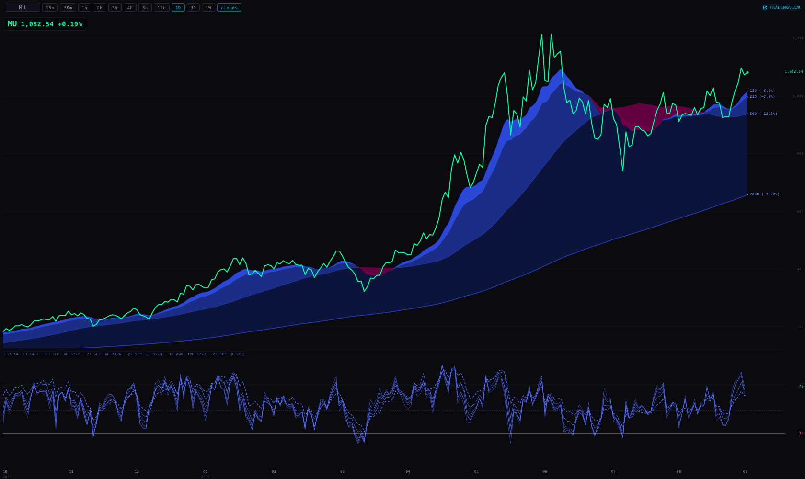
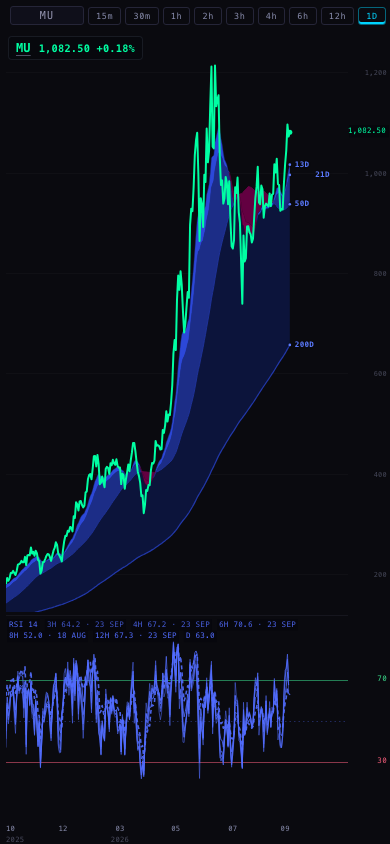
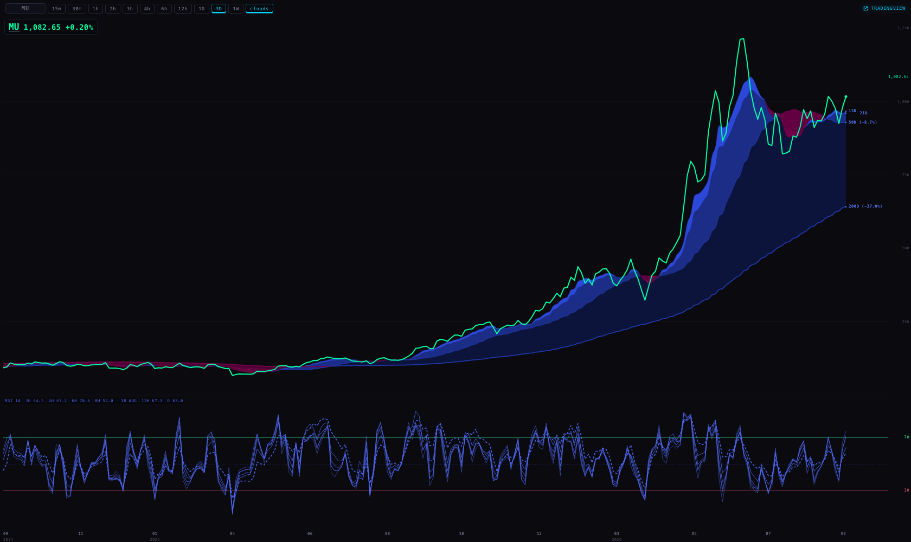
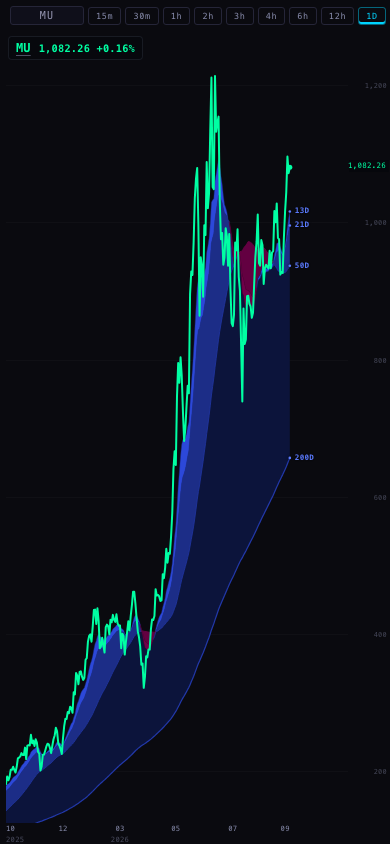

Every Station chart can now draw the multi-timeframe RSI from your Indicator Lab script under the price: one line per locked timeframe (3H, 4H, 6H, 8H, 12H and daily), each worked out from that timeframe's own bars. Three new pages carry it: SPY + QQQ · RSI, OTHER INDEXES · RSI and TARGETS · RSI, each placed right after its daily price page.
“We do have a multi-timeframe RSI… I believe it's six lines… you do have the RSI.” — Alan, 25 Sep
1 · What you will see
Under the price, a band no taller than a quarter of the chart. It holds one indigo line per timeframe: faster timeframes are fainter, slower ones more solid, and the daily line is dashed, as in your script. The 70 line is green, the 30 line is red, and 50 is a dotted guide. Across the top of the band, each line's name and latest value appear in its own ink. When you hover, the values change to the bar under your pointer.
If a line has fallen behind the price, its value carries the day it is from. In the pictures, 8H · 18 AUG means the 8-hour bars stop on 18 August. The line stops there too, rather than being stretched flat to today.
2 · The pictures (real browser, real provider bars, taken 25 Sep, 19:45 UTC)

MU · 1D · 1680 wide. Legend: 3H 64.2 · 4H 67.2 · 6H 70.6 · 12H 67.3, each dated 23 SEP; 8H 52.0 · 18 AUG; D 63.0. The intraday lines end one bar before the dashed daily line.

MU · 1D · 390 (typed ?rsi=1): the legend wraps to two rows.

MU · 3D · 1680. Two years of fan. On 3-day bars every line except 8H reaches the newest bar, so only 8H carries a date.
The new OTHER INDEXES · RSI page, six-up at 1680. SMH, DIA, DRAM, MAGS and IWM each draw all six lines. IGV shows the provider's own “NOT SERVED BY CHART API”, as it already does on its price page.

On a phone, a page-requested fan stays hidden, so the price keeps the whole pane. A typed ?rsi=1 still shows it (pictures above).
3 · What was taken from your Lab script, exactly
Read-only sources: RSI_MTF_Context_Threshold_Experiment_V1.pine (24 Sep sprint), with SCINTILLA_RSI_Fixed_Timeframe_Fan_V1.pine and RSI_FIXED_FAN_REVIEW_2026-09-17.md. Nothing inside INDICATOR_LAB was changed.
Input
Script
Station
Formula
ta.rsi(close, 14) inside each source timeframe
Same: RSI 14 on the close, each line from that timeframe's own bars
Lines
2H (off by default), 3H, 4H, 6H, 8H, 12H, D
Same set and same defaults. ?rsi=2h,4h,1D picks lines
Colour
One family, indigo #526DFF; transparency 55 / 48 / 40 / 33 / 26 / 18 / 10 from 2H to D
Same ink and the same order of strength. Never grey, never white
Daily line
Width 3, dashed
Dashed, a little wider than the others (1.6 px, scaled to a small pane)
References
30 / 50 / 70, “Upper green / lower red”
70 green #39D98A, 30 red #F05B78, 50 dotted indigo
Values shown
Developing values (lookahead off)
The last finished bar of each timeframe (the chart API serves finished bars only)
Not carried over
The 2D/3D/W/2W envelope cloud, the SMA20 signal, and the experiment's recolouring of a line while it is above 70 or below 30. The brief asked for one ink per line, so that recolouring is decision 3 below.
4 · Where each number comes from, and one check that it is right
Bars: the chart API (scintilla-massive-chart-api), through the same route each chart already uses for its price, with one read per timeframe. The data is not written anywhere.
Arithmetic: the RSI function the Station detail view already uses (Wilder's smoothing, the same definition as TradingView's). The fan does not bring its own copy.
Placing a line on a chart: each chart bar shows the value of the last source bar that had finished by the end of that chart bar. A daily line on a 4H chart shows yesterday's value until today's daily bar closes; a 3H line on a daily chart shows each day's last 3H value. Nothing peeks ahead.
Checked against our own internal numbers. The Geiger publisher already computes RSI 14 per timeframe for MU. On the same bars, the fan's arithmetic gives exactly the same values:
Timeframe
Bar
Geiger internal
Fan arithmetic
Difference
Daily
23 Sep
62.1892
62.1892
0.0000
3-day
18 Sep
57.8109
57.8109
0.0000
Weekly
13 Sep
62.4605
62.4605
0.0000
The intraday rungs could not be compared bar for bar: Geiger's intraday series run a session further than the chart API's /candles route serves (see section 6). The test suite also checks the arithmetic against Wilder's textbook series, whose first value is worked by hand: 100 − 100 / (1 + 3.34 / 1.40) = 70.46.
5 · 8H: included, and five weeks old
The brief expected 8H to need a special request. It does not: the chart API lists 8h as an ordinary timeframe. Station's provider client was simply missing it from its list, and now asks for it. But the 8H bars the API holds end on 18 August 2026, and it has only 2,874 of them, while 3H has 29,684. So the 8H line is drawn up to 18 August, stops there, and its label says 8H · 18 AUG. It will catch up once 8H is refreshed like the other timeframes (decision 1).
6 · Two things found in the data on the way
The chart API's newest bar depends on how many bars you ask for. Measured 25 Sep, 19:40 UTC, read-only: MU 3H asked for 400 bars ends 23 Sep 16:00; asked for 500 or more, it ends 22 Sep 13:00. SPY 4H behaves the same. Daily is unaffected up to 6,000 bars. The first pictures I took showed SPY's intraday RSI near 68; with the newest bars included, the true value is 49–54. The fan now reads the recent 400 bars and the long history separately and joins them, with the recent read winning. Your price charts ask for 240 bars, so they are not affected today. Any intraday chart asked for more than 400 with ?bars= would be. This is a chart API fault to fix at the source.
Intraday bars are a session behind daily bars. Daily bars reach 24 Sep, but the 3H, 4H, 6H and 12H bars stop on 23 Sep. That is why those lines carry “23 SEP” on the daily charts: they end one bar early rather than being stretched flat across a session they never received.
7 · What it costs to run
Measured in a headless browser on this MacBook, on the six-up OTHER INDEXES page at 1680 wide with rotation paused. I summed the CPU time of every browser process, including the page itself, over 45 seconds of loading and then one steady minute. Four runs, alternating:
Page
Run
Loading (CPU seconds)
Steady (CPU seconds per minute)
Chart API reads
OTHER INDEXES · DAY (no fan)
1
1.24
0.81
28
OTHER INDEXES · RSI (fan)
2
1.52
0.71
87
OTHER INDEXES · RSI (fan)
3
1.32
0.69
88
OTHER INDEXES · DAY (no fan)
4
1.02
0.67
28
Result: about +0.3 CPU seconds, once, while the page loads, and no measurable steady cost, since the difference is smaller than the run-to-run noise. That is well under the +2 CPU seconds per minute ceiling. The intraday lines re-read every 10 minutes and the daily line every 30, which adds roughly 0.03 CPU seconds per minute on average. That was estimated, not measured. Hover redraws reuse the stored lines and do not redo the arithmetic.
8 · What could be wrong
The first 150 values of each line are computed but not drawn: RSI needs a run-in, and your TradingView chart starts from each fund's first trading day. Long charts ask for up to 3,000 bars per line, so on a 3-day chart spanning years the fastest lines may begin later than the price.
A daily value appears on the intraday bar in which the day's extended session ends (20:00 New York). TradingView draws it on that same bar, but a chart whose bars straddle 20:00 may show it one bar later.
The legend uses the same small type as the cloud labels beside it. On the six-up page it is readable but small.
The join in section 6 works around a fault. If the API's recent and long reads ever stop overlapping, the line uses only the recent 400 bars rather than bridging the hole.
9 · What I did not do
No push, no deploy, no database write, nothing written to a price table. No change inside INDICATOR_LAB.
No Stochastic and no Williams fan. You said you understood if those weren't there.
The fan's bars are not saved in the browser between visits: six timeframes per ticker would push the price cache out of storage. Each page visit re-reads them.
No BACK / CLOSE pair was injected: that script belongs to the Hub repository, and this page is in the Station repository.
Nothing was run on the iMac. Every browser ran headless and was closed. The chart API was proxied locally, adding the scintillahub.ai origin it requires; every other outside address was refused.
10 · Decisions for you
8H is five weeks old because the chart API does not refresh it. Recommendation: add 8H to the routine refresh with the other intraday timeframes. Until then, the fan keeps 8H visible, marked 18 AUG, since you named it.
SPY + QQQ · RSI always shows SPY and QQQ, while its price twin switches to ES / NQ after 16:30. Recommendation: keep SPY and QQQ. The brief names them, and a daily RSI of the funds is the steady read; the futures' daily bars follow a different session.
Your experiment recolours a line green above 70 and red below 30. The brief asked for one ink per line, so Station keeps the lines indigo and colours only the 70 and 30 lines. Recommendation: leave it this way for now, and switch the recolouring on if you miss it on the wall.
Branch agent/station-rsi-fan-20260925 from origin/station/merge-20260923 @ 5e6027d. Tests: 653, with only the 20 failures already on 5e6027d (the base has 20 failing out of 640); 13 new tests in tests/station-rsi-fan.test.mjs.